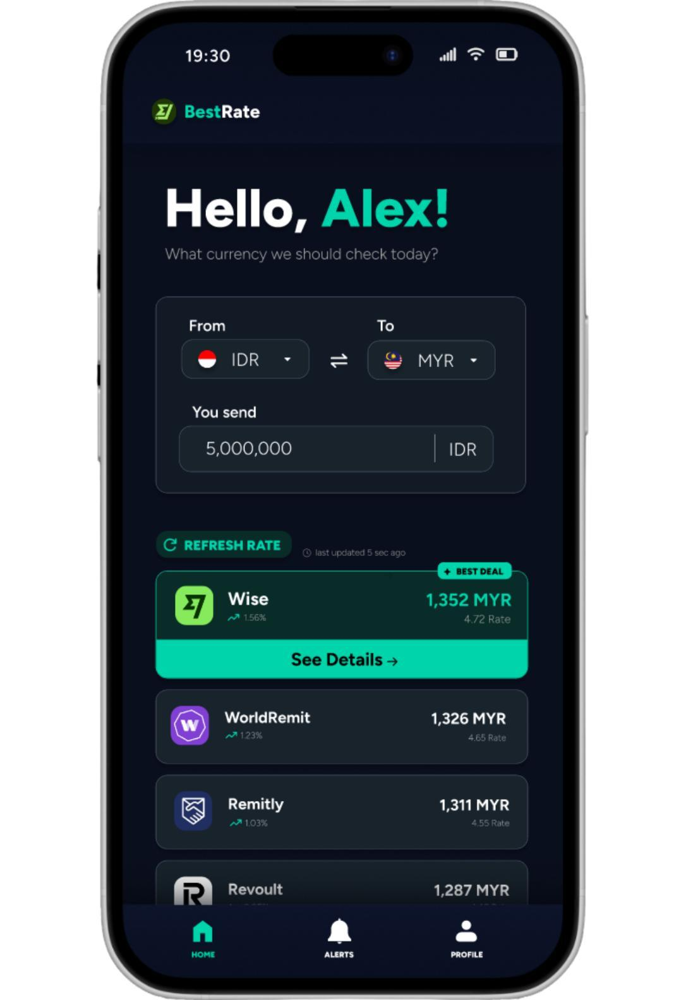
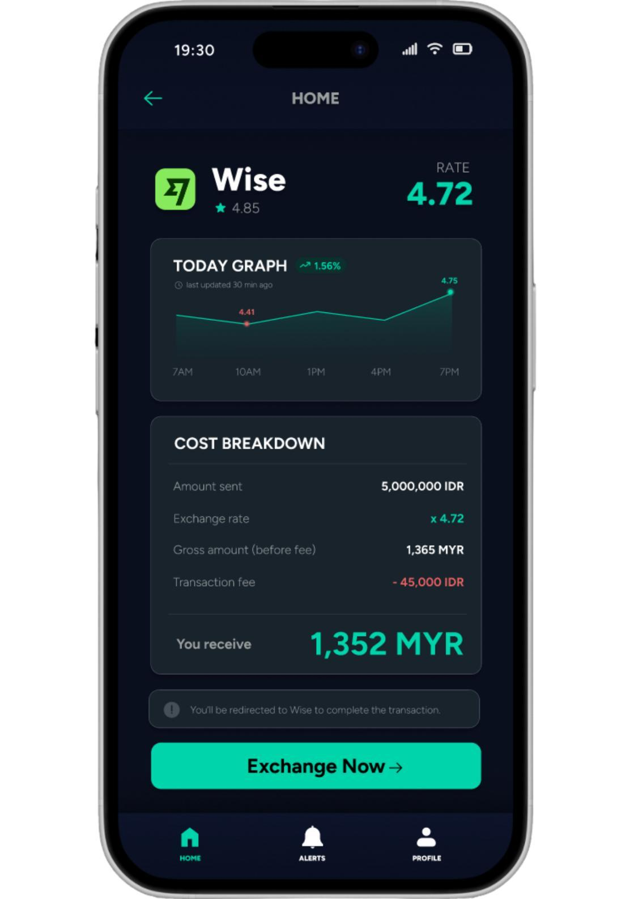
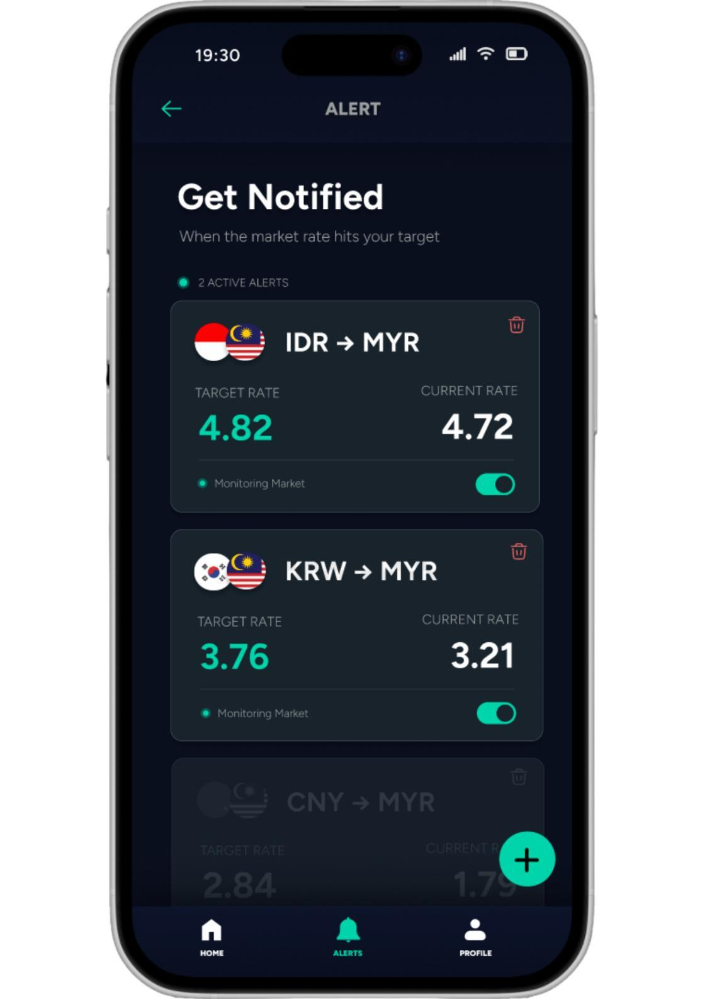
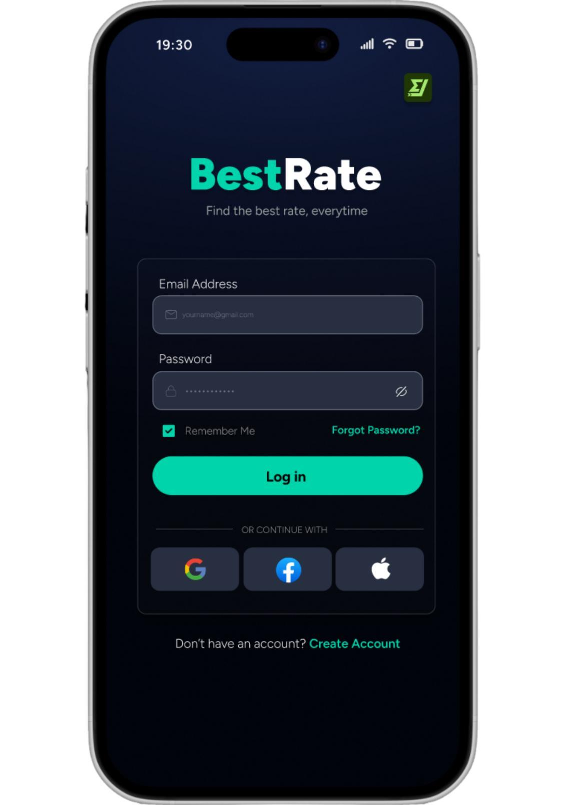
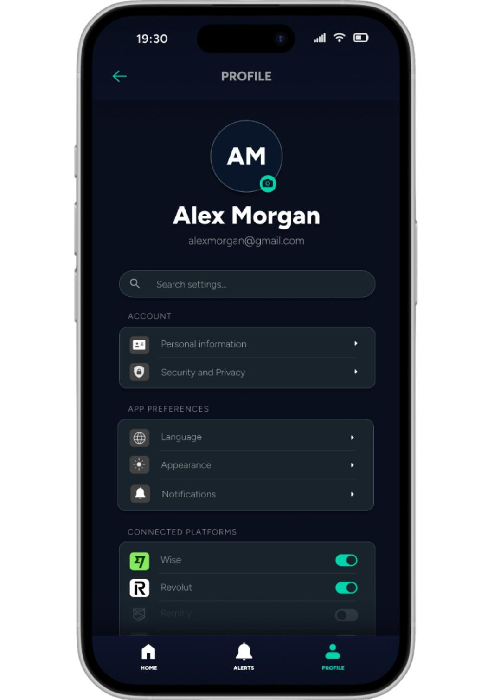

A currency comparison app concept that brings provider rates and fees into one place, with target-rate alerts so you don't have to keep checking.
CourseMobile App System Design
ToolsFigma
FocusUI/UX principles
BestRate in motion

Automatic walkthrough with added scrolling and navigation. Rates are illustrative; no money is transferred.
01 · The problem
One exchange. Too many apps.
As an international student, I kept opening different provider apps to find the best exchange rate. Comparing them took time, and a busy schedule meant I could miss a good rate.
01
Comparison takes time
Switching between providers makes a routine currency exchange feel like extra work.
02
The rate isn't the whole cost
Additional fees can change which provider offers the best value.
03
Good rates can slip past
Exchange rates move throughout the day. Checking constantly doesn't fit a busy schedule.
04
Convenience comes first
When comparing feels difficult, it is tempting to use the familiar option without checking the alternatives.
02 · How BestRate helps
Less checking. More clarity.
Designed for international students and travellers who exchange currencies regularly: compare the options, understand the cost, then continue with the chosen provider.
Find the strongest option first
Choose the currencies and amount to send. The proposed comparison ranks providers by total cost, including fees, with the best option at the top. Refreshing rates is designed to update the results and their timestamp.
Content-first layoutThe best deal comes before the supporting detail, so people have a clear place to start.
Visual hierarchyA larger amount and teal highlight draw attention to the result; secondary information stays quieter.

Understand what you'll receive
Open a provider to see its fee breakdown and the day's exchange-rate trend. The proposed Exchange Now action hands the user over to that provider to complete the transaction.
Progressive disclosureThe comparison stays focused. A separate details page holds the information needed for a closer decision.
Data visualisationA timestamped line graph shows how the rate changes over the day, including its high and low points.

Set a target, then step away
The alert concept lets users choose a currency pair and target rate, then receive a notification when that target is reached. Existing alerts can be paused or deleted when they are no longer needed.
Feedback and controlCurrent and target rates sit together, while toggles show whether an alert is active.
Consistent navigationHome, Alerts and Profile stay in the bottom navigation, with back controls for returning from detail screens.
03 · The visual decisions
A purpose behind every detail.
The app's dark palette and teal accent give financial information a clear order. Each visual choice supports the comparison task.
01
Dark-first design
A navy background creates a quiet base for light text, key amounts and teal actions.
02
Card-based layout
Each provider has its own card, keeping its name, rate and result grouped for comparison.
03
Minimalist design
One typeface, deliberate spacing and a single accent colour keep the screens focused.
04
Readable data
A line graph gives changing rates a visual shape, while labels and amounts retain the detail.
04 · Keeping users informed
A clear next step. A way back.


Explain what happened
The planned feedback system explains failed logins and asks for confirmation before actions such as resetting a password. If a provider connection is disabled, the proposed flow explains the issue and directs users to Profile to enable it.
Visibility of system statusRate timestamps, alert states and confirmation messages explain what the system is doing.
Recovery and navigationUseful error messages, back controls and familiar tabs give users a way to continue.
05 · What I learned
Design starts with a reason.
This project changed how I think about interface design. Cards, type, colour and navigation each need to serve a user need. For BestRate, that meant helping someone compare costs and move through the flow without feeling lost.
Try it yourself.
View BestRate's app screens and explore the visual design in Figma.